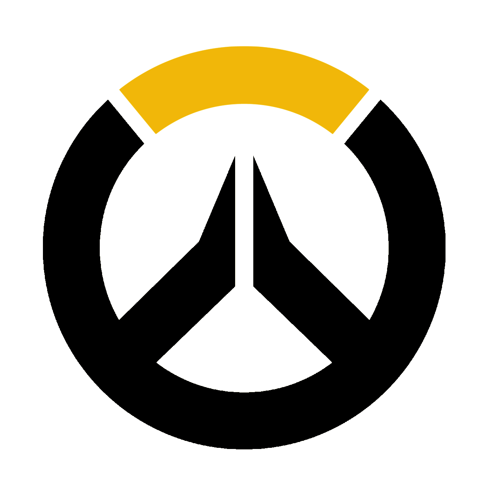

Hi, I’m Jeffrey — a Game Design master student from Escape Studio and a Computer Science bachelor from the University of Birmingham with a strong passion for game development. I’ve always been fascinated by how games can blend logic, creativity, and design to create meaningful and entertaining experiences.
My primary focus is building games from the ground up — designing mechanics, scripting systems, and creating interactive content. I have worked on buidling a custom game mode in the Overwatch Workshop, where I can push creative boundaries and explore new gameplay ideas.
I’m continually learning and refining my skills, and I’m excited to contribute to projects that challenge and inspire me.

Junkenstein's Revenge Endless MadnessA classic Overwatch PvE mode with a twist. Adding Money, Stats, Special waves and Super Ultimate to the base game.
This is a prototype of a Teamfight Tactics like game, with the tiles are not unify and each has its own effect on units. Tiles can block units from entering it, affects unit move speed and stats etc. The objective of the game is to eliminate all the enemy units.
Live the life of a fresh graduate in a gacha- and VTuber-oriented world. Daily life is shaped by devotion to beloved VTubers — Minato Aqua, Tokoyami Towa, and Hoshimachi Suisei — expressed through relentless gacha pulling. Experience the struggles, joys, and consequences of being a gacha-addicted StartEnd fan.